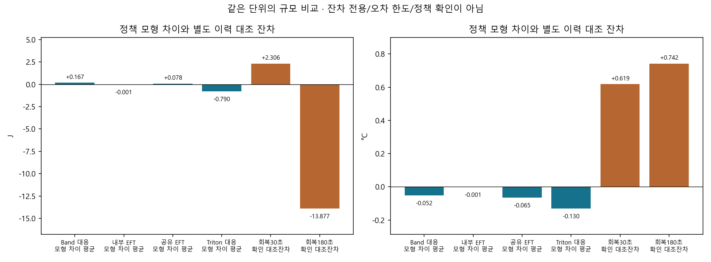

저장된 192조건·2,112행 재사용. 새 시뮬레이션·학습·기기 명령 0.
실측 잔차는 실제 일정에 조건부인 A, 정책 비교는 합성 도착부터 일정을 만드는 B다. 같은 계수라도 다른 부하·이력·관측 프로토콜의 잔차를 정책 오차 한도나 신뢰구간으로 전용하지 않는다.
모형의 작은 공동 감소는 일부 있으나 Band 대비 주평가 공동 감소 0. 실제 열·에너지 우월성은 미확인. 기존 실측에서 확인된 CPU/PAR 응답 차이는 별도 근거로 유지한다. strict/default/experiment_ready=false 불변.

| 기준정책 | 범위 | 서비스·비용 적격쌍 | 모형 공동감소 | 평균 ΔJ | 평균 Δ최고AP °C |
|---|---|---|---|---|---|
| ARRIVED_QUEUE_J_PEAK_AREA_V1 | primary_low_sustained | 96 | 1 | 0.32385386319589643 | -0.04231180950840211 |
| ARRIVED_QUEUE_J_PEAK_AREA_V1 | all_conditions | 184 | 1 | 0.17133413165547876 | -0.0242063180516681 |
| BAND_HEFT_WHOLE_REQUEST_ADAPT_V1 | primary_low_sustained | 96 | 0 | 0.16712323206887802 | -0.05236723695343248 |
| BAND_HEFT_WHOLE_REQUEST_ADAPT_V1 | all_conditions | 113 | 1 | 0.14462312270817024 | -0.04649112709421137 |
| EFT_REFERENCE | primary_low_sustained | 96 | 5 | -0.000940765352128281 | -0.000913119977949887 |
| EFT_REFERENCE | all_conditions | 190 | 5 | -0.0004696632215979578 | -0.0004630486400410212 |
| ENERGY_AP_REQUEST_V1 | primary_low_sustained | 96 | 0 | 0.4967320118155569 | -0.06335605654109451 |
| ENERGY_AP_REQUEST_V1 | all_conditions | 181 | 2 | 0.26220763579366535 | -0.03284585996661588 |
| SHARED_EFT | primary_low_sustained | 96 | 4 | 0.07827377389808395 | -0.06466221589729744 |
| SHARED_EFT | all_conditions | 119 | 7 | 0.06717749880038082 | -0.05491852331008591 |
| TRITON_RATE_CAP1_CLASS_WEIGHT_REQUEST_ADAPT_V1 | primary_low_sustained | 48 | 48 | -0.2855510426356336 | -0.04886965750728348 |
| TRITON_RATE_CAP1_CLASS_WEIGHT_REQUEST_ADAPT_V1 | all_conditions | 144 | 100 | -0.3799572873424226 | -0.01424276397852273 |
| TRITON_RATE_CAP1_EQUAL_REQUEST_ADAPT_V1 | primary_low_sustained | 48 | 48 | -0.2855510426356336 | -0.04886965750728348 |
| TRITON_RATE_CAP1_EQUAL_REQUEST_ADAPT_V1 | all_conditions | 144 | 98 | -0.3799572874424396 | -0.013587383239892233 |
| TRITON_RATE_CAP2_CLASS_WEIGHT_REQUEST_ADAPT_V1 | primary_low_sustained | 96 | 96 | -0.7900135308531192 | -0.12977620225122666 |
| TRITON_RATE_CAP2_CLASS_WEIGHT_REQUEST_ADAPT_V1 | all_conditions | 112 | 99 | -0.67489839149122 | -0.11332490456493326 |
| TRITON_RATE_CAP2_EQUAL_REQUEST_ADAPT_V1 | primary_low_sustained | 96 | 96 | -0.7900135308531192 | -0.12977620225122666 |
| TRITON_RATE_CAP2_EQUAL_REQUEST_ADAPT_V1 | all_conditions | 112 | 99 | -0.67489839149122 | -0.11332490456493326 |
| TRITON_RATE_OFF_FIXED_REQUEST_ADAPT_V1 | primary_low_sustained | 96 | 96 | -0.7900135308531192 | -0.12977620225122666 |
| TRITON_RATE_OFF_FIXED_REQUEST_ADAPT_V1 | all_conditions | 112 | 99 | -0.67489839149122 | -0.11332490456493326 |